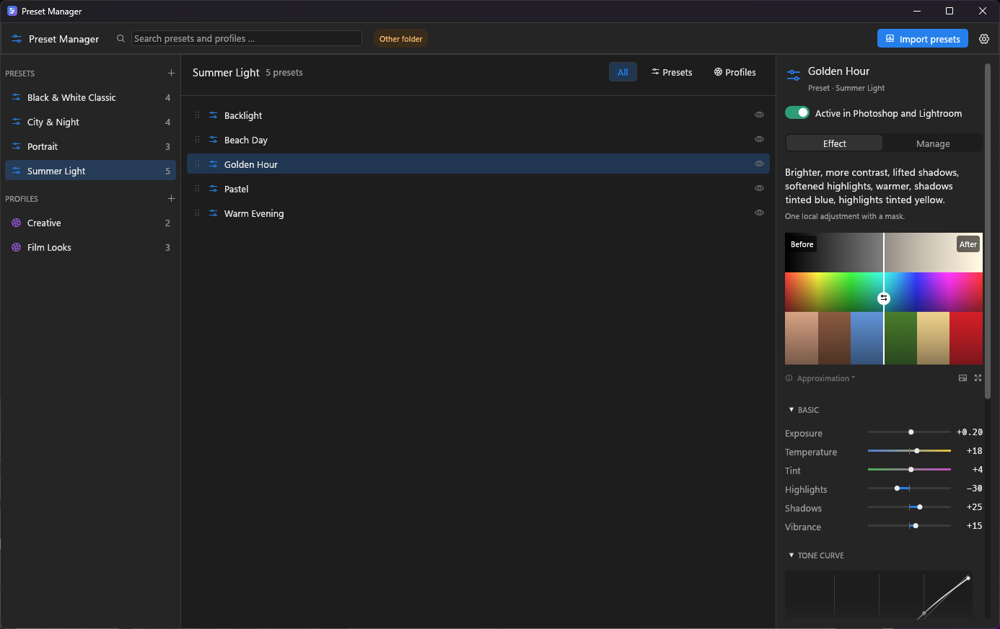

Preset Manager
Organize, understand and switch on or off the presets and profiles of Photoshop and Lightroom Classic.
Free and open source (MIT) · no account, no ads, no data collection

What it does
See your whole collection
All installed presets and profiles, separated as in Camera Raw, with search and filters.
Keep it in order
Rename, move to other groups, sort, create and merge groups – for many items at once.
Switch presets on and off
Deactivated presets stay here but no longer appear in Photoshop and Lightroom.
See what a preset does
A short description in plain words, a before/after preview on your own photo, every changed setting as in Camera Raw.
Add new packs
Drop a folder or ZIP file into the window. Already installed presets are recognized.
Nothing gets lost
Undo and redo, deleted items go to the Recycle Bin, every file is backed up before it is changed.
How it works
Photoshop, Photoshop (Beta) and Lightroom Classic read presets from one shared folder, %APPDATA%\Adobe\CameraRaw. Preset Manager works directly on these files – there is no separate library. Changes appear in the Adobe programs after a restart. The app writes only to these folders:
| What | Where |
|---|---|
| Presets and profiles | %APPDATA%\Adobe\CameraRaw\ |
| Settings | %APPDATA%\PresetManager\ |
| Backups, undo log, log files | %LOCALAPPDATA%\PresetManager\ |
Why Preset Manager writes to the Adobe folder
Photoshop and Lightroom Classic load user presets and profiles from exactly one place, %APPDATA%\Adobe\CameraRaw. Adobe offers no other way to install them: no interface, no import service, no setting for another folder. Putting the files there is how presets are installed – by hand, by preset sellers' installers, and by Preset Manager.
That is why the Microsoft Store version asks Windows for direct write access to this folder (the unvirtualizedResources capability). Without it, Windows would redirect new presets into a private folder of the app, and Photoshop and Lightroom would never see them. The access is limited to the three folders in the table above; everything else the app might write under AppData stays redirected as usual. This needs Windows 11, so the Store version requires Windows 11.
Preset Manager never deletes permanently (deleted presets go to the Recycle Bin), backs up every file before replacing it, and every action can be undone. The complete source code, including the Store package manifest, is public on GitHub.
Download
PresetManager-Setup.exe from the latest release on GitHub: no administrator rights needed, keeps itself up to date. A portable ZIP is available in the same place. A version for the Microsoft Store is on its way.
Support and privacy
Questions, bug reports and ideas: GitHub Issues.
Preset Manager collects and sends no personal data: privacy policy.